Le Système des Appellations · l'INAO
Derrière chaque bouteille d'appellation se cache un document juridique : le cahier des charges. Voici celui de l'AOC Cour-Cheverny — l'original français et sa traduction anglaise, mis en page à l'identique.
Une appellation d'origine contrôlée n'est pas un label commercial : c'est une norme juridique. Pour chaque AOC, l'INAO (Institut national de l'origine et de la qualité) publie un cahier des charges — le texte officiel, homologué par décret, qui définit précisément ce qui a le droit de porter le nom.
On y trouve tout : les communes autorisées, les cépages permis, la densité de plantation, les règles de taille, les rendements maximaux, le degré d'alcool minimum, les dates de mise en marché, le lien au terroir, et jusqu'aux méthodes de contrôle. Rien n'est laissé au hasard.
Le document ci-dessous est le cahier des charges réel de l'AOC Cour-Cheverny (Val de Loire, cépage romorantin B). La traduction anglaise reproduit la mise en page, la typographie, les en-têtes, la pagination et la structure à l'identique — pour que l'on voie exactement à quoi ressemble un décret d'appellation.
Bibliothèque complète
Choisissez une région, une sous-région et une appellation, puis téléchargez son cahier des charges.
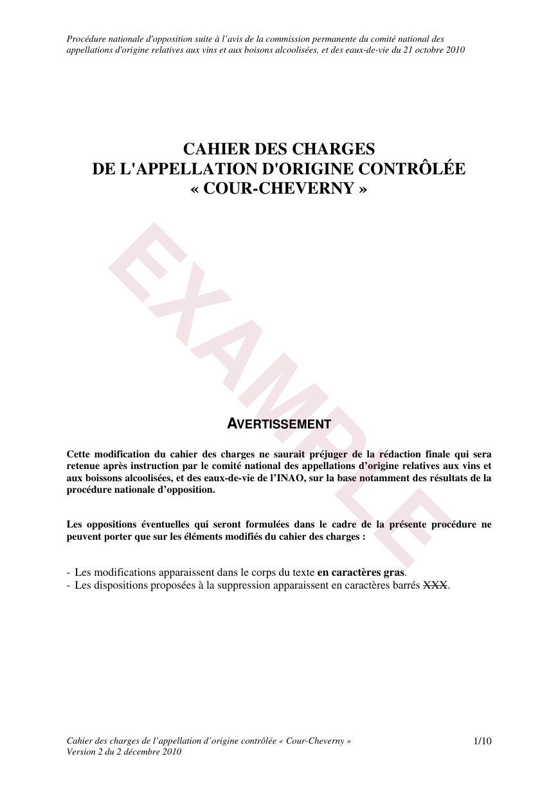
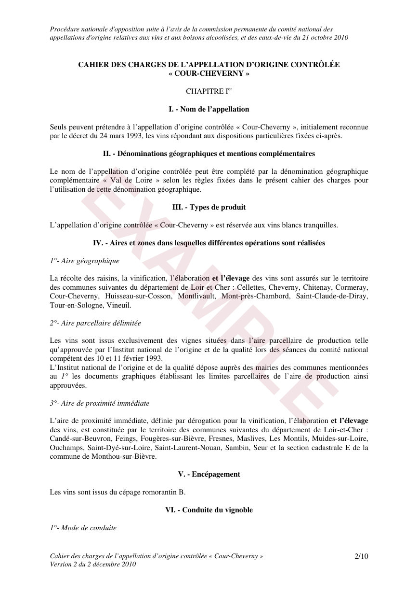
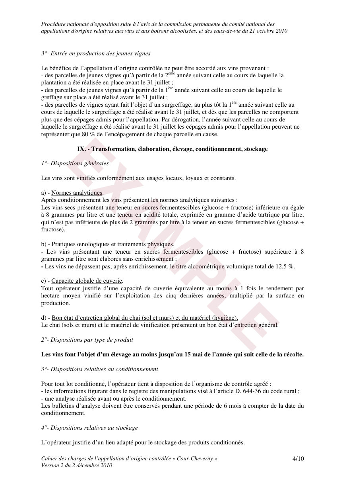
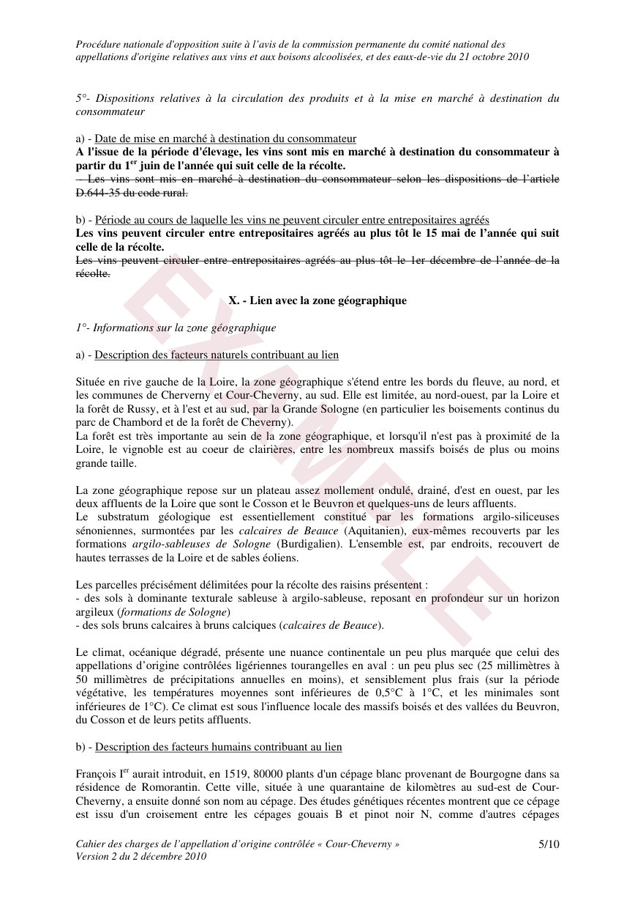
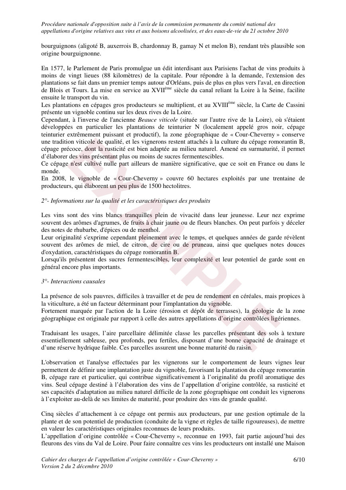
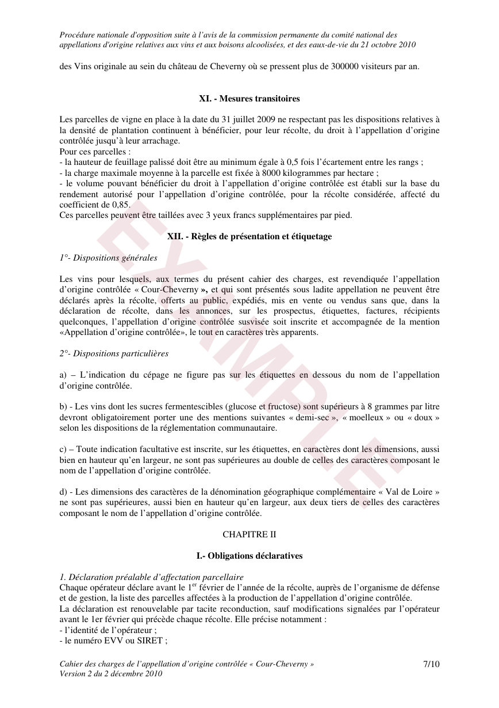
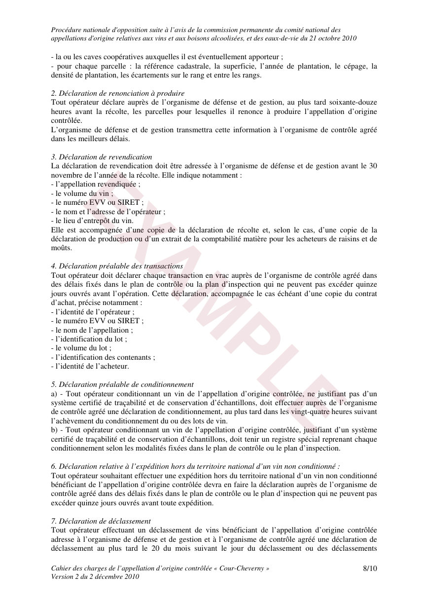
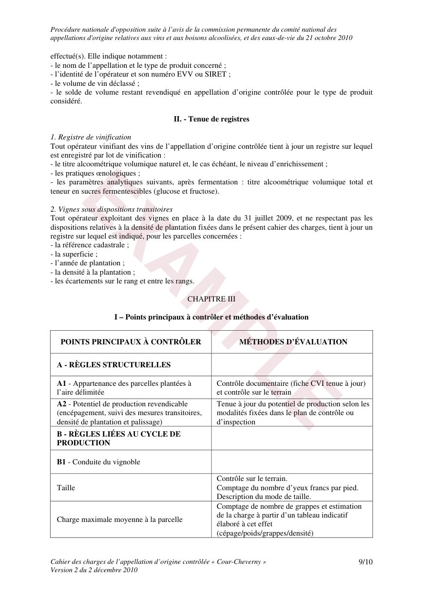
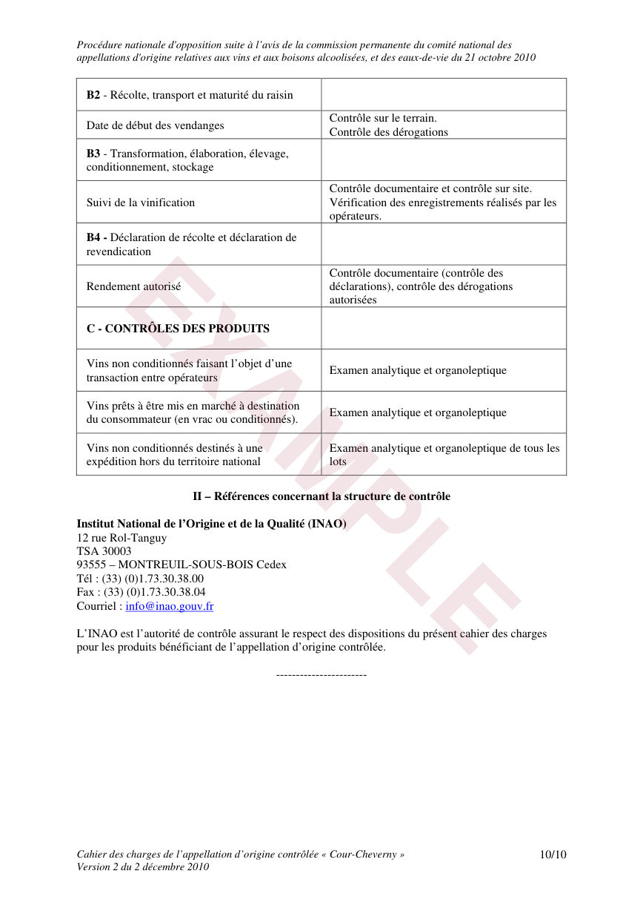
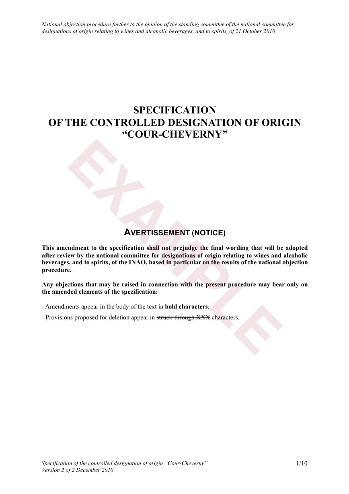
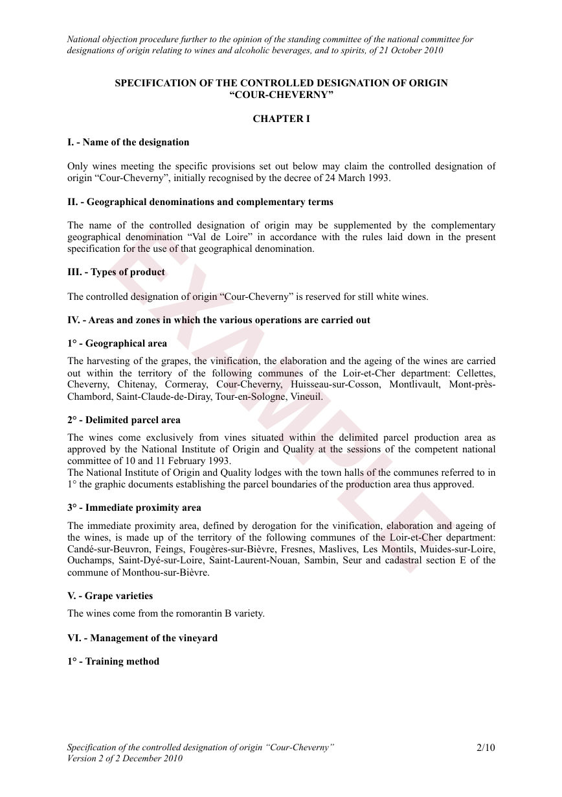
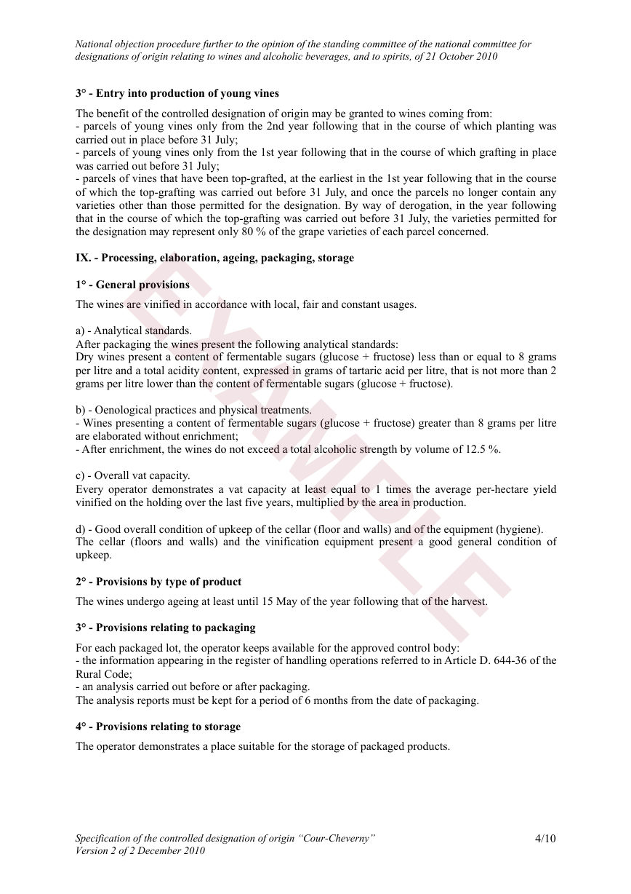
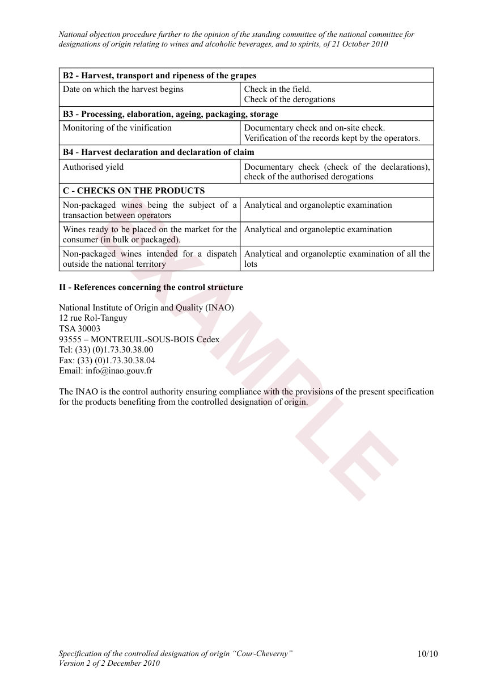
Les deux documents partagent la même pagination : chaque page anglaise correspond à la page française de même numéro. Astuce : faites défiler les deux cadres en parallèle pour comparer article par article, ou utilisez les boutons de téléchargement ci-dessus pour obtenir les fichiers PDF.